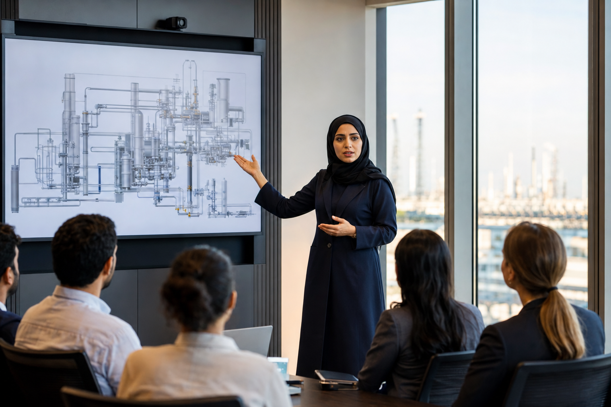
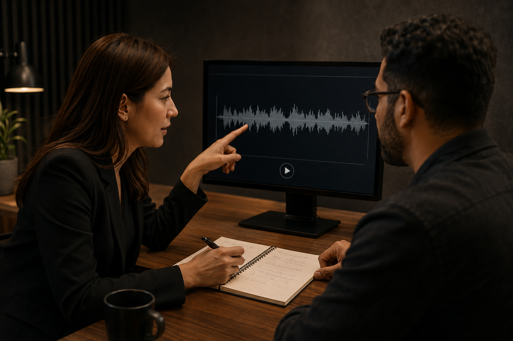

İngilizcen, ne kadar iyi bir mühendis olduğunu gizlemesin.
İş görüşmelerinde, toplantılarda, sunumlarda ve uluslararası çalışma ortamlarında uzmanlığını net, akıcı ve kendinden emin şekilde ifade et.
PROGRAM
İngilizce öğrenmiyorsun. Mühendisliğini İngilizce anlatmayı öğreniyorsun.
Star Speaker, İngilizceyi anlayan fakat iş hayatında konuşurken donan mühendisler için tasarlanmış uygulamalı bir konuşma programıdır.

Programdan önce ve sonra
Önce
- Cümleye başlamakta zorlanmak
- Bildiğin kelimelere ulaşamamak
- Kısa ve güvensiz cevaplar vermek
- Teknik bilgini olduğundan zayıf göstermek
Sonra
- Cevabına sakin ve net başlamak
- Fikrini doğal bir yapıyla geliştirmek
- Teknik konuları anlaşılır şekilde açıklamak
- Uzmanlığını güvenle göstermek
NASIL ÇALIŞIR?
Gelişim tesadüfen değil, doğru sistemle gerçekleşir.
Star Speaker, konuşma problemini belirler; sana hedefli pratik, uzman geri bildirimi ve gerçek iş senaryolarında tekrar sağlar.
-
Gerçek problemini belirle
Konuşurken nerede donduğunu, neden netliğini kaybettiğini ve neye odaklanman gerektiğini belirle.
-
Her gün konuşarak çalış
Pasif dersler yerine, ihtiyacına göre hazırlanmış kısa ve hedefli konuşma görevlerini tamamla.
-

Uzman geri bildirimiyle düzelt
Her seferinde tek bir önemli zayıflığa odaklan ve neyi nasıl düzelteceğini açıkça gör.
-
Gerçek iş senaryolarında hazırlan
İş görüşmeleri, toplantılar, teknik açıklamalar ve sunumlar üzerinde tekrar yap.
-
Gelişimini kayıtlarla gör
İlk ve son kayıtlarını karşılaştırarak konuşmandaki gerçek değişimi görünür hale getir.